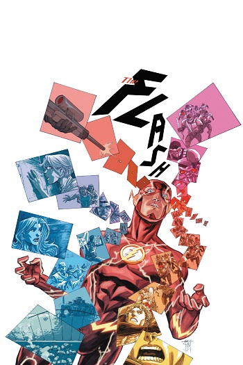
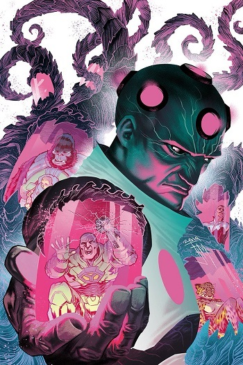
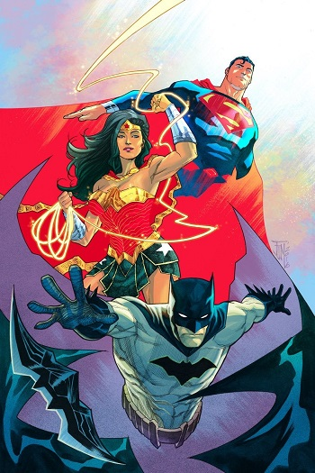

Francis Manapul
Francis Manapul (born August 26, 1979) is a Filipino Canadian comic book artist and writer. Manapul is known for his work on Witchblade and The Necromancer for Top Cow, working on the former for three years, off and on, returning for the tenth anniversary issue in 2005. He has provided covers for various titles, most notably for some G.I. Joe comics from Devil's Due Publishing.


